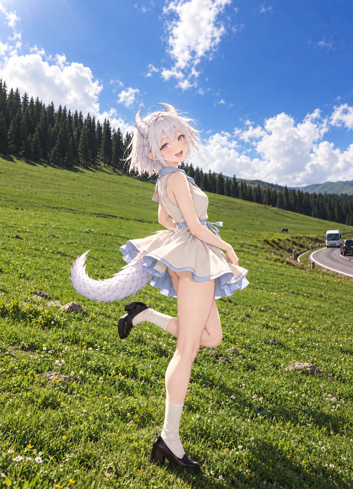

用户认可精选 / 逐页阅读
N69 · 转身时裙摆追上了风
用户认可

检查与反馈记录
- 草坡回身、风吹裙摆、天空留白和道路远景对应R10；恰好两只角和一条尾巴，双腿与后弯腿基本可辨，裙内安全层不外露；待用户复核。
- v02只收小两只角并去掉沟纹与强镜面反光；全图目视保留脸、服装、尾巴、双腿、草坡、道路和构图，待用户复核。
- 用户指出v02把角面沟纹抹平，质感不如v01。v03以v01为底，只恢复沿角身走向的细密横向起伏与浅层鳞纹，并轻微控制硬白高光；角的轮廓、角根、大小、面部、动作、服装、尾巴与场景均保留。角面材质仍待用户复核。
- 用户于2026-10-23明确表示“好了，继续吧”，将v03记为认可。